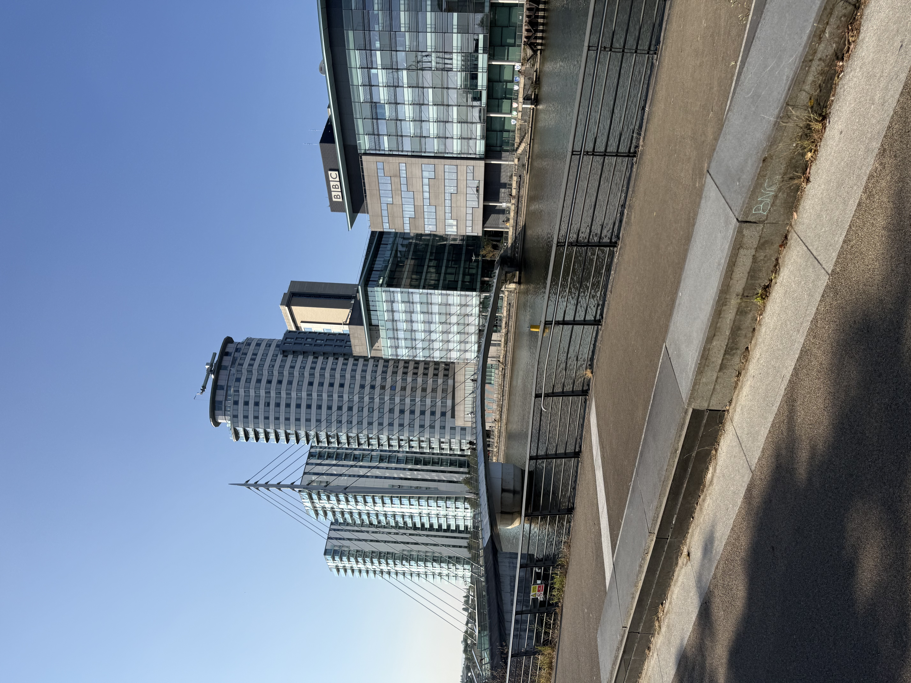

AN ARCHIVAL COLLECTION OF ACADEMIC AND PERSONAL PROJECTS FOCUSING ON STRUCTURAL INTEGRITY, COMPUTATIONAL DESIGN, AND INTERACTIVE SYSTEMS. 2026-2027.

ID_001
Exploration of generative patterns using modular arithmetic. Focus on visual weight and balance within a constrained 8px grid system
#SYSTEMS #TYPOGRAPHY
ID_002
Demonstrating rapid state transitions and color inversion through standard CSS utility classes. Hover over this card to view the visual transformation
#INTERACTIVE #MOTION
ID_003
Multi-dimensional data visualiization for urban traffic flow. Utilizing dark-gray scalar values to represent density and frequency
#DATA_VIZ #ALGORITHMIC
ID_004
Design study of brutalist architecture translated into digital interface components. Emphasis on raw materal feel and high contrast
#BRUTALISM #UI_DESIGN
ID_005
Responsive system framework for educational platforms. Prioritizing information hierachy and accessible data nodes.
#FRAMEWORK #UX_RESEARCH
ID_006
Experimental log of 100 days of layut experiments. Documentation of grid-breaking patterns and asymmetrical balance.
#LAYOUT #EXPERIMENTAL
ARCHIVE_SECTION_END
VIEWING_PAGE_01_OF_04